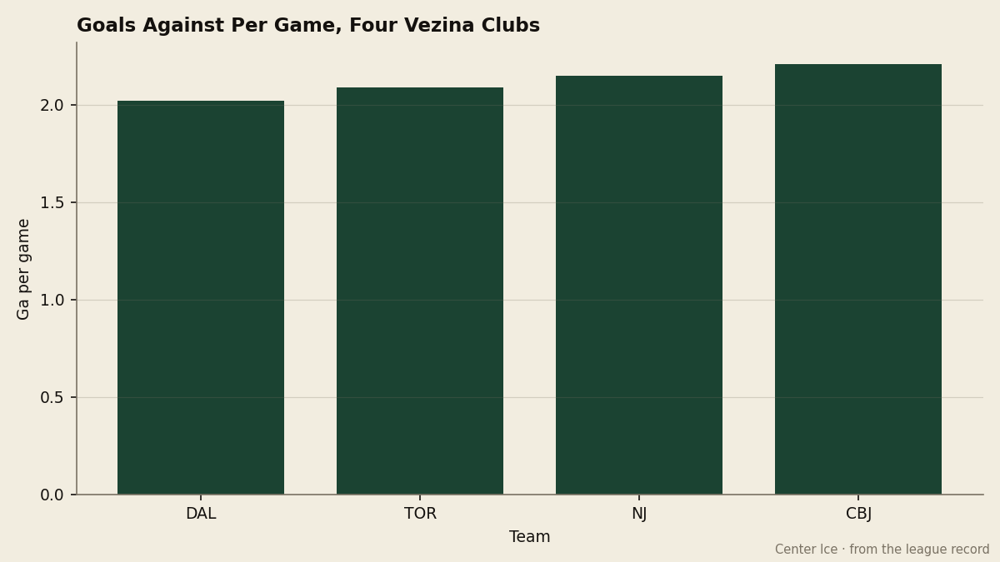
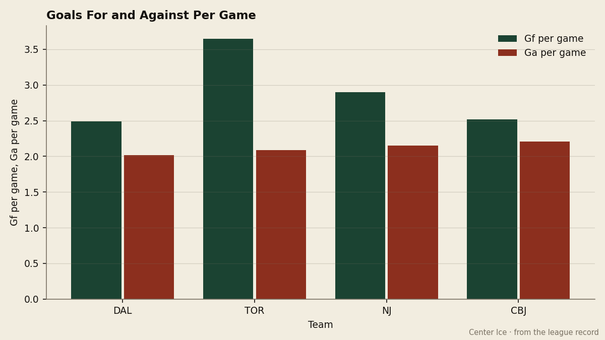
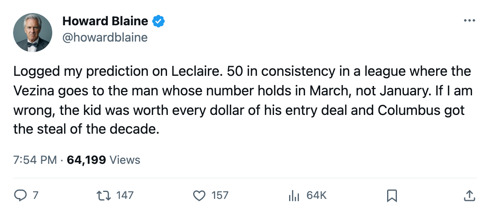
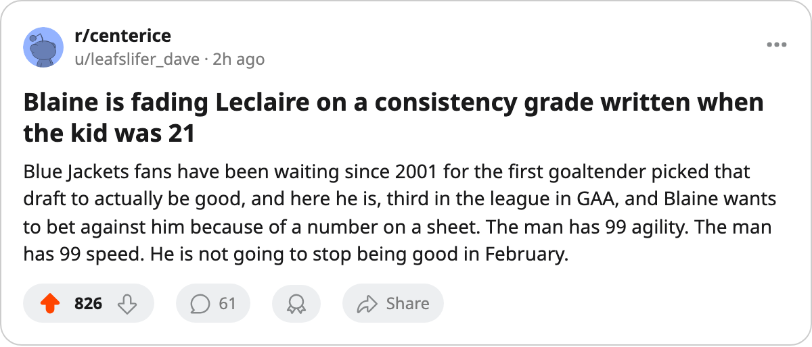

The 50 and the 1.92: Pascal Leclaire Sits Third in the Vezina Race, and Columbus Owes Him a Decision
The Blue Jackets' goaltender carries a 99 in agility and a 50 in consistency, and his contract has zero years left on it

 Pascal Leclaire91 has a 1.92 goals-against average in 31 games. Three goaltenders in this league have a lower one, and one of those three,
Pascal Leclaire91 has a 1.92 goals-against average in 31 games. Three goaltenders in this league have a lower one, and one of those three,  Marty Turco97 of
Marty Turco97 of  Dallas Stars, has played four more games. Leclaire's save percentage of .903 sits behind Turco's .909 and
Dallas Stars, has played four more games. Leclaire's save percentage of .903 sits behind Turco's .909 and  Martin Brodeur93's .907, and ahead of everyone else with 25 or more decisions. By any measure the desk has been using to track the Vezina race all season, the 23-year-old from Repentigny, Quebec is in it.
Martin Brodeur93's .907, and ahead of everyone else with 25 or more decisions. By any measure the desk has been using to track the Vezina race all season, the 23-year-old from Repentigny, Quebec is in it.
The Bureau's Book, however, lists him with a 50 in consistency. That is the lowest grade on his sheet, and it sits beside a 99 in agility, a 99 in speed, and a 98 in glove. The Book calls that combination a player with the hands and feet to stop anything and the temperament to stop it in clusters. The 50 says he might go three weeks without a bad goal and then three weeks without a good one.

 Columbus Blue Jackets allows 2.21 goals a game, second-best in the Western Conference behind Dallas at 2.02. The club sits 4th in the conference at 54 points on a $62.03M payroll, which works out to $1.15M per point, the 12th-best rate in the league. Leclaire's $1.10M salary is a small fraction of that commitment on a roster that carries
Columbus Blue Jackets allows 2.21 goals a game, second-best in the Western Conference behind Dallas at 2.02. The club sits 4th in the conference at 54 points on a $62.03M payroll, which works out to $1.15M per point, the 12th-best rate in the league. Leclaire's $1.10M salary is a small fraction of that commitment on a roster that carries  Geoff Sanderson84, the team's leading scorer at 54 points, and
Geoff Sanderson84, the team's leading scorer at 54 points, and  Todd Marchant82 and
Todd Marchant82 and  Dimitri Kalinin82. The goaltender making the least money on the roster is the one holding the most important position, and the contract expires at the end of this season.
Dimitri Kalinin82. The goaltender making the least money on the roster is the one holding the most important position, and the contract expires at the end of this season.

What the 50 means in a contract negotiation
A goaltender on an entry-level deal with zero years left is a restricted free agent. Columbus can match any offer, and the front office has not said publicly whether it intends to build around the 1.92 or around the 50. The Development Index has Leclaire up nine points above his base grade of 83, which the Bureau reads as a player whose current form is carrying his overall above what his underlying tools suggest. It says the base is lower than the number in the box.
His strongest attributes are the ones that produce highlight saves. The 99 in agility and the 99 in speed mean he can recover on plays that would bury a lesser goaltender. The 98 in glove and the 95 in snap give him two routes to a stop on any given shot. The 92 on the five-hole means he gets across to close a lane that a 70-goaltender leaves open. Those are the numbers that generate a 1.92. The 50 in consistency is what a general manager reads at 2 a.m. the night before an offer sheet clears.
The race, and where it stands in January
Turco leads with 1.79 in 35 games for Dallas Stars. Brodeur sits at 1.85 in 34 for  New Jersey Devils. Leclaire is 0.13 behind Brodeur and 0.13 behind Turco.
New Jersey Devils. Leclaire is 0.13 behind Brodeur and 0.13 behind Turco.  Roberto Luongo95 of
Roberto Luongo95 of  Toronto Maple Leafs has a .930 save percentage, the best on the sheet, but only 23 games played. If the league requires a minimum number of starts, a question the Bureau's own Vezina criteria do not spell out on this page, Luongo may not qualify. If it does not, he enters the conversation on a number no one else can touch.
Toronto Maple Leafs has a .930 save percentage, the best on the sheet, but only 23 games played. If the league requires a minimum number of starts, a question the Bureau's own Vezina criteria do not spell out on this page, Luongo may not qualify. If it does not, he enters the conversation on a number no one else can touch.
| Goaltender | Club | GP | W | GAA | SV% |
|---|---|---|---|---|---|
| Marty Turco | Dallas Stars | 35 | 22 | 1.79 | .909 |
| Martin Brodeur | New Jersey Devils | 34 | 25 | 1.85 | .907 |
| Pascal Leclaire | Columbus Blue Jackets | 31 | 20 | 1.92 | .903 |
| Roberto Luongo | Toronto Maple Leafs | 23 | 17 | 1.99 | .930 |
Leclaire last played in the QMJHL four years ago, splitting between the Halifax Mooseheads and the Montreal Rocket before Columbus took him eighth overall in 2001, the first goaltender selected that June. His first full season, 2003-04, produced 23 wins and 131 goals against in 49 starts. This year's 1.92 is a half-goal-per-game improvement that no one projected. The potential grade on the Book is 94, and he is 91 today. He is close to what the Bureau thought he could be, sooner than expected.
The question Columbus answers in the summer
A club that has $62.03M committed already and 54 points banked does not need to pay a goaltender $5M to keep him. It needs to decide whether the 1.92 is a new floor or a peak. The Development Index says the current number is nine points above base. The consistency grade says the variance is enormous. Both are on the sheet.
The desk's position, for what it is worth in January: a 23-year-old with a 99 in two attributes and a 98 in a third does not regress to a 50 in consistency because the 50 was written when he was 21 and the form line was lower. The Book adjusts and the grades move. But the desk has seen enough seasons to know that a goaltender whose form line reads +9 in January sometimes spends February at +2, and the GAA follows the Index down faster than it climbed.
I will log this and settle it in April: Leclaire finishes the season with a GAA above 2.00. The 1.92 that puts him in the Vezina conversation today will not survive the 11 games between now and the deadline, and the 11 games after that. A 50 in consistency earns its keep eventually.
The organization has until the summer to decide whether it agrees.

